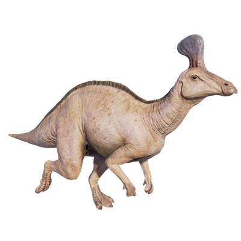

Useful Website
Notable for its distinctive duck-billed snout and striking head crest, Tsintaosaurus is an herbivorous hadrosaurid that can grow up to 10m in length and weigh in excess of three tonnes. Despite its relatively large size, Tsintaosaurus was capable of walking on four legs or two and could reach high speeds when fleeing from predators. Its name comes from the location of its discovery, Qingdao in China.
